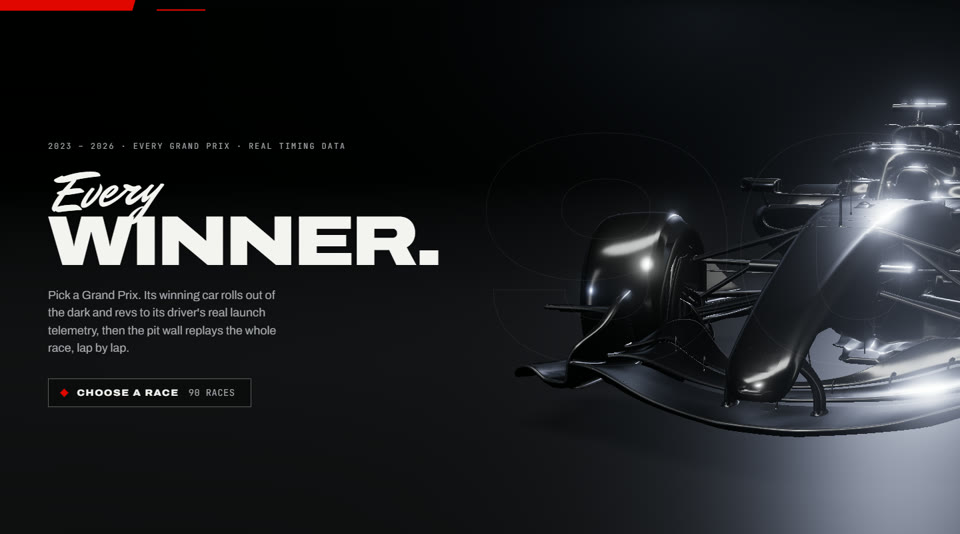

01 · Pitwall
Real Formula 1 races, streamed as if live, on a platform built to stay up.
- Event-driven: Kafka into seven Python services, TimescaleDB history, and WebSockets to the browser.
- GitOps with Argo CD and Helm. Ingest, timing, strategy and the API ship as canaries that roll back automatically when their own metrics fail.
- Five SLOs with multi-window burn-rate alerts, each with a runbook. Prometheus, Grafana, Loki, Tempo and OpenTelemetry.
- Chaos GameDays found a crash-recovery bug and the fix took duplicate rows from 1,251 to 10. A local k6 test held all 1,182 browser connections.
- A public 3D site replays 91 real races; a scheduled job adds each new Grand Prix on its own.
Kafka · Kubernetes · Argo CD · Argo Rollouts · KEDA · Prometheus · Chaos Mesh · k6 · FastAPI · three.js
